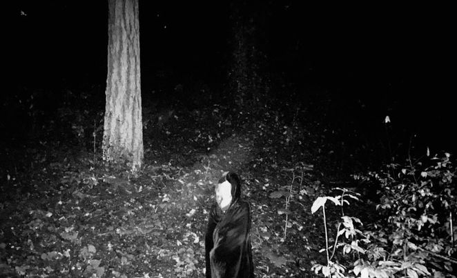

Based out of the Pacific Northwest, Memory Derelict is creating heavy, atmospheric music that blurs the lines between ambient, idm, drone and shoegaze. His newest album - Revelation - is an exploration of the ecstasy and terror that can be found through religious experiences.
instagram.com/memoryderelict